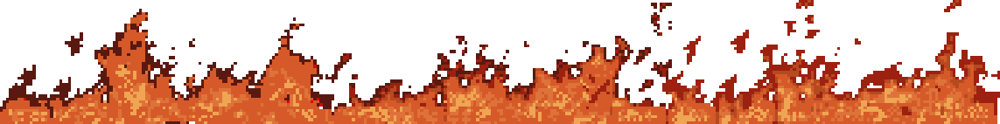

Hi. The main point of this website isn't really about my personal life, so I will keep this section relatively brief. My name is Dylan, but I release games under the name Bobby Sins. I am 18 years old and live in London.
I was introduced to programming through taking Computer Science at GCSE, learning Python as my first language. Since then, programming has evolved into a passion of mine, and in my free time I have also taught myself C++, JS, HTML, CSS, SQL and GDscript.
Bobby Sins started out as a Scratch account for me and my brother to make weird one-off games on (we actually still do this! You can play the scratch games here). The headcanon for Bobby Sins at the time was that he is a Christian farmer hermit, living in North Dakota, producing weird games on the side. I honestly can't remember why we picked Bobby Sins as the name, but I kinda liked it, hence why I stuck with it when it came to making proper games. I started making games using Godot at 16 years old - you can see everything I've made on the games page. I love to make games, because I find it a lot of fun.
Aside from programming, I like to listen to a lot of music in my free time. The music I listen to has inspired much of what I have made. You can see what I am listening to on my last.fm account, feel free to follow me or recommend me something! It is always greatly appreciated. I also like to play games, not just make them. My top 5 favourite games are (in no particular order):
If you need to contact me to ask any questions or just want to talk to me, I am most active on my email and Discord. I do also have social media accounts, which you can find on my links page, but I am less likely to respond to you there. Thanks for reading!
Email address: bobbysinsvideogameproduction@yahoo.com
Discord user: Rolesker